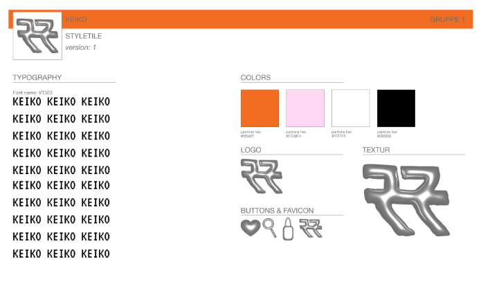

Tema 5 handlede om redesign af virksomhed, i gruppen skulle man tage en fællesbeslutning om hvilken virksomhed vi gerne ville redesigne. Hvor beslutning endte med at blive os Keiko. Som er er Vintage butik i København. Deres inspiration til deres tøj stil, var en blanding af 00'er, 80'er og 90'er. Der metode af at styre deres butik gik ud på at søjle grimt tøj, men gør det til en nyt og fed fashion indenfor mode. For at bevise at man godt kan have grimt tøj som kan se godt ud, hvis man stiler det på en fed måde.
Den første uge gik ud på at få tilladelse fra butikken så vi kunne komme igang. Vi delte hjemmeside op så vi alle havde en del som vi skulle søge for. Men vi sad sammen i grupperne og aftalte hvordan hjemmesiden skulle se ud, hvilke ændringer man ville komme med hvilke farver der kunne blive tilføjet, og hvilket tema vi skulle gå med så hjemmesiden også ramte den årgang keiko starte med at gå efter.
Moodboard

Style Tile
Problemer
Iconerne (Favorit, Kurv og Søgning) oppe i højre hjørne, var der problemer med at få den til at stå på række med hinanden, med en passende afstand til hinanden. Hver af iconerne have ikke samme img størrelse, så når der blev rettet på den enes margin-left, så blev de skuppet mere fra hinanden samtidigt med størrelsen på billederne blev meget mindre end hvad der stod til at være.
Ændringer
Ideen med iconerne var at de skulle kunne stå på række med hinanden men med forskellige distance fra logoet, blog og shop. Jeg ændrede det så der kom til boxe istedet for en så loget stod for sig selv, mens blog, shop og iconerne stod sammen men med lidt mere mellemrum.
Løsninger
llllllllllllllllllllllllllllllllllllllllllll